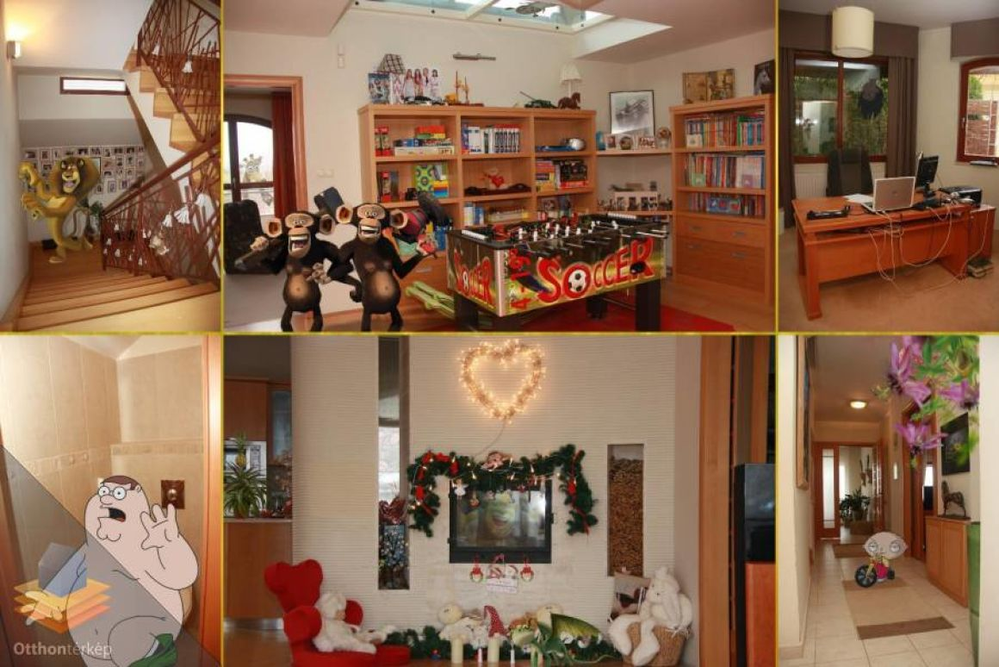
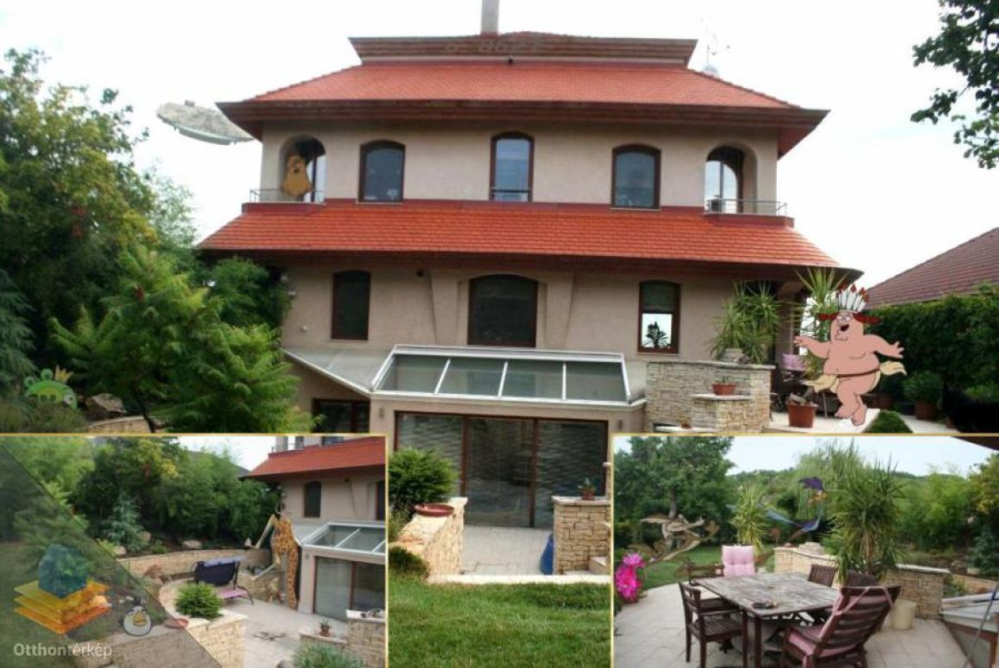

A kevesebb néha több? Naná, hogy nem! Jegyezd meg: a sok MINDIG több, mint a kevés. Mutasd meg mit tanultál a képszerkesztő tanfolyamon és varázsolj mosolyt a Vevők arcára!
Ki mondta, hogy egy Ingatlanreferens csak a Tulajdonos véleményét szajkózhatja? Senki. Mondd ki, amit gondolsz, a Te véleményed is számít, nem csak az Eladóé vagy a Vevőé...
Ha estére marad egy kis munka, külön dolgozószoba biztosítja a nyugalmas elvonulás lehetőségét. Amúgy az a sarok isteni! A sűrű bambusz az ablak előtt … az tuti nagyon feng shuis.
Már rég lejárt a single photo ideje... Használd a kollázs funkciót és kombináld a képeket! 2017-et írunk, légy formabontó és mutass többet egyetlen képnél!!!